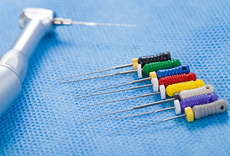
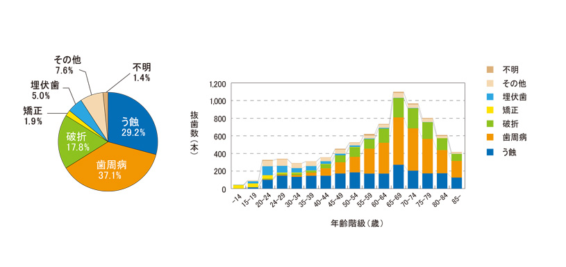
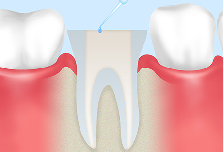
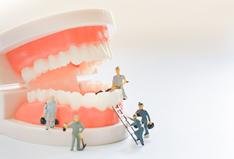
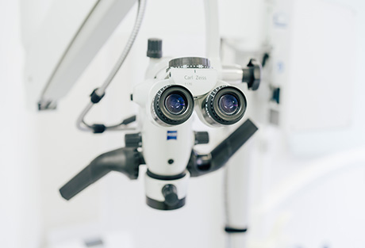
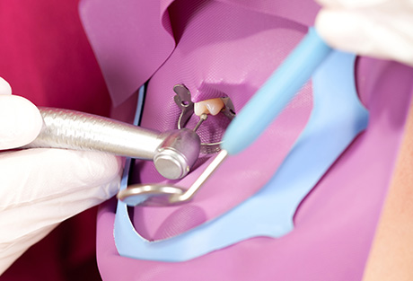
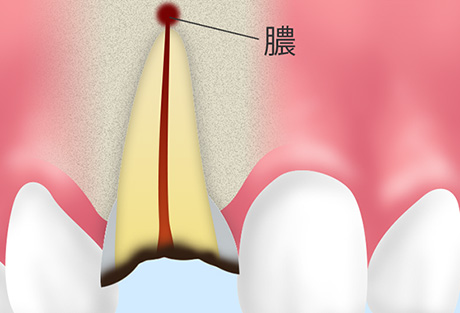

歯を残すために神経の治療を
むし歯が重度まで悪化すると、従来は抜歯するしかありませんでした。しかし近年では根管（こんかん）治療を行うことで、歯を残せるようになっています。こちらでは町田市の歯医者「ワイズデンタルオフィス」が、重度のむし歯を救う神経の治療「根管治療」についてご紹介します。

むし歯を甘く見てはいけません

図: 抜歯の主原因（全体）と抜歯の主原因別にみた抜歯数（年齢階級別、実数）
厚生労働省HPより引用（https://www.e-healthnet.mhlw.go.jp/information/teeth/h-04-002.html）
こちらは、厚生労働省が公表している「抜歯の原因」と「原因別の抜歯数」についてのデータです。これを見ると、むし歯（う蝕）はどの年齢にも一定層いることがわかります。
むし歯は、見た目は小さく見えても、実は歯根の深くまで進行しているケースも少なくありません。また、悪化してしまえば歯を失う病気です。「むし歯はあるけど放置してしまっている」という方は、お早めにご相談ください。
歯を残すための根管治療とは
むし歯が悪化して歯根に達すると、その中の根管（こんかん）に入っている神経・血管は死んでしまいます。そうなると、従来ではその歯は抜くしかありませんでした。しかし近年は「根管治療」が行われるようになり、歯を残せるようになったのです。

根管治療とは、歯根の中にある根管から、むし歯菌に感染した神経・血管を除去し、内部を十分に洗浄・殺菌した上で、再び感染しないよう薬剤を充填して根管を封鎖する治療のことです。
根管は一人ひとり本数や形態が異なる上に、根の先が分岐していることもあるなど大変複雑な構造になっています。そのため根管治療は、歯科治療の中でも精密さが求められる治療の一つ。
治療は複数回に分け、時間をかけて行う必要がありますが、適切に行えば抜歯を避けられます。
根管治療の重要性

建築において、基礎工事がとても大切であるのは言うまでもありません。どんなに上の建物が立派であっても、基礎工事がきちんとできていなければその家は倒れてしまうからです。
根管治療を建築にたとえると、「基礎工事」にあたると言われています。適切な治療ができていなければ、そのうち歯根に膿が溜まったり炎症が起きたりと、結果として抜歯を免れない状況になりかねません。そのような事態を避けるためには、しっかりとした根管治療を行うことが大切なのです。
ワイズデンタルオフィスが行う根管治療について～米国式根管治療～
根管治療の目的は、「重度のむし歯であっても抜かずに残すこと」です。それを実現するには、治療の精度を高めなくてはなりません。そこで当院では、「米国式根管治療」を導入しています。米国式根管治療のポイントとなるのは、「マイクロスコープ」と「ラバーダム防湿」です。
- マイクロスコープ（歯科用顕微鏡）
- 
- 患部を2～24倍まで拡大して確認できるマイクロスコープを使用し、根管内をしっかり目で確認しながら治療します。大変細く複雑な根管に対し、手探りで行っていた従来の根管治療のリスクを解消し、精密な処置を可能にします。
- ラバーダム防湿
- 
- 治療する歯の周りを覆うゴムのシートです。外部から細菌が歯根の中に入り込むのを防ぎ、再発防止につなげます。
ワイズデンタルオフィスではこの2つのポイントを押さえ、根管治療の成功率を大幅に高めています。
通常の根管治療で完治しない場合の処置 「歯根端切除術」について

歯の上部から行う通常の根管治療では完治しない場合には、「歯根端（しこんたん）」切除術」を用います。これは歯ぐきを切開し、歯根の外部から直接処置する外科的な治療法です。歯根の先にある病巣と、病巣の原因となっている歯根の一部も切除し、通常の治療で歯取り除けなかった感染部位をしっかり除去します。
なおこの方法は、根管の先が複雑に折れ曲がっていて根管治療ができない場合や、以前の根管治療で詰めた薬剤が取り除けない場合などにも用いられることがあります。
保険診療と自費診療で行う根管治療の違い
根管治療は保険診療でも行えますが、使用できる治療法や材料、かけられる時間などに制限が生じてしまうのが事実です。当院では再治療を防ぐため、できるだけ精度の高い根管治療をご提供したいと考え、ご希望の方には自費診療をご提案しています。保険診療と自費診療で行う根管治療の違いは、以下の通りです。
※表は左右にスクロールして確認することができます。
| 保険の根管治療 | 米国式根管治療（自費） | |
|---|---|---|
| 保険適用 | 健康保険が適用される | 適用されず自費診療となるが、希望の治療法・材料を選択できる |
| 概要 |
|
|
| 検査・診断 | X線（2次元）による診断 | 歯科用CT（3次元）を用いた精密な診断が可能 |
| 治療時間 | 1回30分 | 1回60～90分 |
| 通院回数 | 多い | 少ない（1～4回） |
| 精密治療 | 目視で行う | マイクロスコープ（歯科用顕微鏡）を使用 |
| 無菌的治療 | 必要最低限の対応 | 使用器具の徹底的な滅菌および、可能なかぎり使い捨て器具を使用 |
| 使用薬剤 | 保険で認められたものにかぎられる | 効果が認められている未認可の薬剤なども、患者様の同意・歯科医師の裁量のもと使用できる |
| 根管内の消毒 | 必要最低限 | 十分な濃度の消毒薬を用いた科学的清掃が可能 |
| 2年後の 歯の保存率 |
50％以下 | 90％以上 |
| 費用 | 1歯：数千円程度 | 1歯：5万円～ ※歯根の数や湾曲度、破壊の程度によって異なります。 |
症例紹介
○○の症例
 |
|
テキストが入ります。テキストが入ります。テキストが入ります。テキストが入ります。テキストが入ります。テキストが入ります。テキストが入ります。テキストが入ります。テキストが入ります。テキストが入ります。テキストが入ります。
| 治療における注意点・リスク | |
|---|---|
| 治療期間 | |
| 治療費用 |
○○の症例
|
|
テキストが入ります。テキストが入ります。テキストが入ります。テキストが入ります。テキストが入ります。テキストが入ります。テキストが入ります。テキストが入ります。テキストが入ります。テキストが入ります。テキストが入ります。
| 治療における注意点・リスク | |
|---|---|
| 治療期間 | |
| 治療費用 |
根管治療の費用について
根管治療Q&A
神経を抜いたのに痛いのはなぜですか？
それにはいつかの理由が考えられますが、可能性が高いのは、神経を抜いた際に歯根の先に菌が残り、膿が溜まっているケースです。歯の中の神経はなくなっていても、膿のまわりの神経が刺激されると、痛みが発生します。
ほかにも、体調の変化や歯周病による炎症が原因である可能性もあります。当院ではマイクロスコープを使って精密検査を行い痛みの原因を追求できますので、一度ご相談ください。
治療が終わったのに、咬むと痛いのはなぜですか？
治療を終えた後、人によって痛みを感じることがあります。少し様子を見ていただき、痛みが引かないようであればご相談ください。
以前にほかの医院で根管治療をして、治ったはずなのに痛みます。なぜでしょうか？
残念ながら、前回の根管治療が不完全で歯根の中に細菌が残り、先端が膿んでしまったと考えられます。適切な処置が行われずこのようなケースが起こり、中には再治療せず放置すると抜歯が必要になってしまう危険性もあります。
当院では精密な治療を行っておりますので、お早めにご相談ください。
根管治療の流れと費用について
むし歯・歯周病にならないために「予防歯科・定期検診」